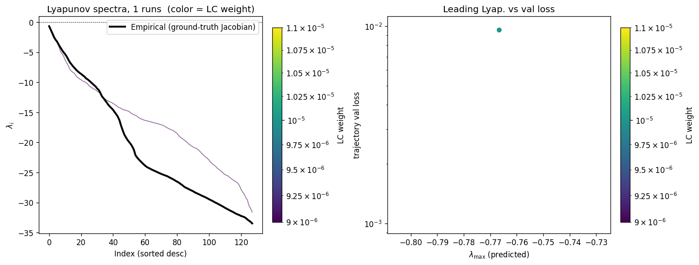
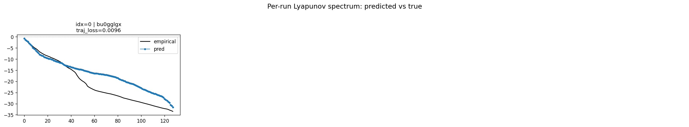
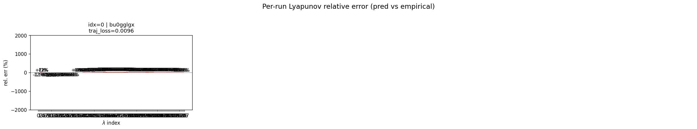
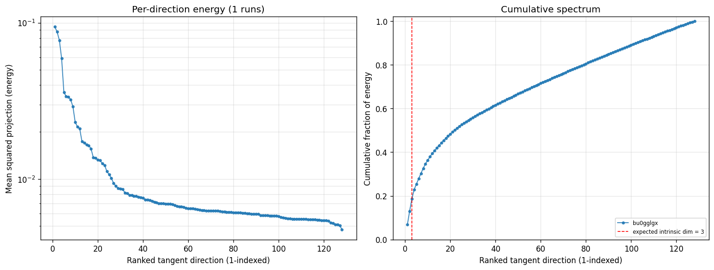

wmtask_latent_additive_mse_p30_permidentity_replicationProject: WMTask_identity_encoder_verification
Launched: 2026-04-27T03:45:11Z
Completed: 2026-04-27T04:00:18Z
Outcome: complete_with_failures
Git: latent-JacobianODE @ 42e46ba
Expected runs: 1
wmtask_latent_additive_mse_p30_permidentity_replicationDescription
Same as wmtask_latent_additive_mse_p30_dualckpt_replication except encoder.final_perm_identity=true. Single run, LC=1e-5, obs_noise_scale=0.05, dual checkpoint (patience=5 + shadow=2).
Hypothesis
Trained monolithic with final_perm_identity=true should reach similar best_traj_loss as the original (i73jwojr ~0.0105) and produce a clean Lyapunov spectrum (Δλ_min ≈ 0). The diagnostic on its trained best.ckpt should give the apples-to-apples gradient- signal numbers we need to compare against DirectSum.
Success criteria
Chosen run (by best_traj_loss): bu0gglgx — traj_loss=0.00961, MASE=0.9073, R²=0.9890, LC loss=3.952, epoch=8.0
Runs analyzed: 1 (expected 1)
| run_idx | run_id | best_traj_loss | best_MASE | R² | LC loss | epoch |
|---|---|---|---|---|---|---|
| 0 | bu0gglgx |
0.00961 | 0.9073 | 0.9890 | 3.952 | 8.0 |
| Criterion | Verdict | Note |
|---|---|---|
| Run trains without divergence | Unknown | |
| Both es2-best.ckpt and (epoch-best) best.ckpt saved | Unknown | |
| best_traj_loss within ~2x of i73jwojr's 0.0105 | Unknown |
Automated verdicts use simple numeric-threshold parsing and may mis-classify qualitative criteria. The Discussion section below takes precedence.




(to be written)